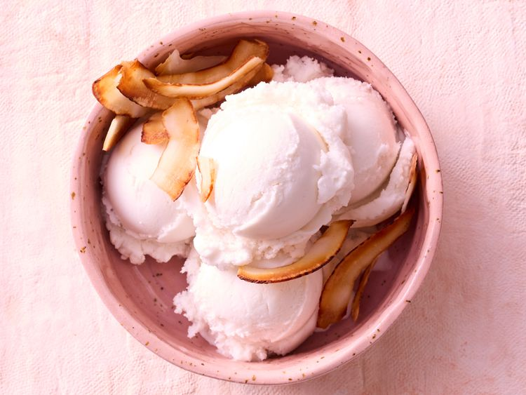

Coconut Milk Cream
Home

Description
This coconut milk cream is a dairy-free alternative to traditional whipped cream. It is light, fluffy, and perfect for topping your favorite desserts. It is also vegan and gluten-free.
Ingredients
- 1 can of full-fat coconut milk, refrigerated overnight
- 1 tablespoon powdered sugar
- 1 teaspoon vanilla extract
- 1/2 teaspoon of cinnamon
Directions
- Chill a mixing bowl in the freezer for 10 minutes.
- Open the can of coconut milk and scoop out the solid coconut cream that has risen to the top. Discard the liquid or save it for another use.
- Place the coconut cream in the chilled mixing bowl. Add the powdered sugar, vanilla extract, and cinnamon.
- Using a hand mixer or stand mixer, whip the coconut cream until light and fluffy, about 3-5 minutes.
- Use the coconut milk cream immediately or store it in the refrigerator for up to 3 days.